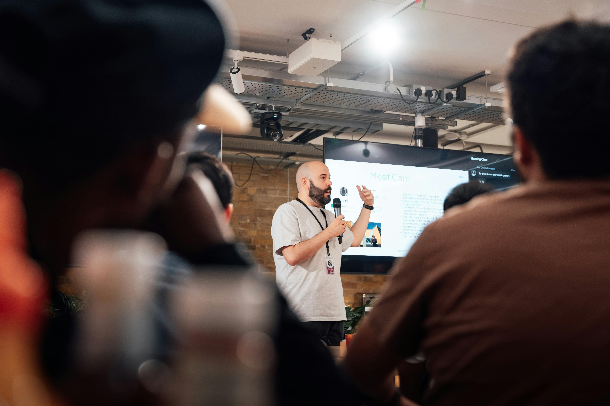

Aprende a crear tu propio huerto en casa, aprovechando espacios pequeños de manera eficiente y sostenible. En este taller, descubrirás cómo cultivar hortalizas, frutas y hierbas aromáticas en balcones, terrazas o patios, utilizando técnicas ecológicas como el riego por goteo y el compostaje casero. Ideal tanto para principiantes como para amantes de la jardinería, este espacio te permitirá conectar con la naturaleza y disfrutar de alimentos frescos y saludables cultivados por ti mismo.
El evento organizado por DAW1 se celebrará en el salón de actos del centro de formación profesional Virgen de Gracia de Puertollano Ciudad Real, el día 25 de marzo de 2025 a las 16:30 ¡Te esperamos!
